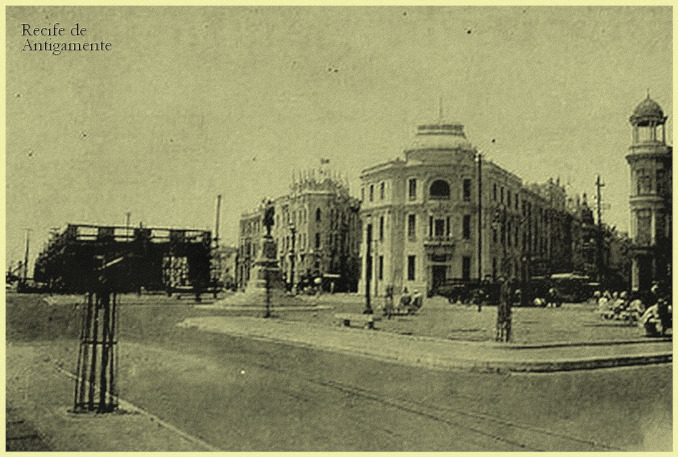

Conheça Marco Zero

O Marco Zero, na Praça Rio Branco, é conhecido como local de fundação da cidade do Recife e também como ponto inicial de contagem das distâncias calculadas a partir da cidade. O lugar é um dos pontos mais importantes na capital Pernambucana, pois é também uma região de forte movimento durante o Carnaval.
História:
No início do século passado, o centro do Recife passou por drásticas reformas, com projetos de higienização urbana e melhoramento das condições do Porto do Recife. Na prática, a higienização social se traduziu em desapropriações de pelo menos 480 imóveis que foram demolidos para a abertura das três novas avenidas no Bairro.
Com esta grande reforma, profundas modificações foram feitas no bairro e na praça, como a demolição da Matriz do Corpo Santo e a abertura de novas e largas avenidas. No local onde estava a igreja, está edificado o edifício Maurício de Nassau, de características modernas e fachadas em vidro. Ao seu lado foram construídos os prédios da Associação Comercial de Pernambuco e a Bolsa de Valores. Estes dois prédios apresentam, em sua arquitetura, nítida influência francesa que se caracteriza pela mistura de diversos elementos construtivos, além do armazém 10 e 12 que serviam ao porto do Recife para o estoque de açúcar. Estes prédios, hoje, abrigam a sede do Grupo Industrial João Santos, o Santander Cultural, a Associação Comercial de Pernambuco, a Caixa Cultural e o Centro de Artesanato de Pernambuco, considerado o maior do segmento no Brasil.

Em 1999 a praça que existia no local sofreu novas modificações projetadas pelo pintor Cícero Dias, como a realocação do busto do Barão do Rio Branco e do Marco Zero.
Atualmente o local serve como ponto de encontro de jovens, esportistas, artistas, turistas e moradores da cidade, além de ser palco de comemorações e apresentações artísticas.
Guia turístico:
1. Conhecer o conjunto arquitetônico eclético
A praça e o bairro inteiro, já durante o domínio holandês (1630-1654), passaram por aterros e reformas radicais, com altos e baixos. Uma das mais importantes foi a reforma urbana do início de 1900, que deixou como legado um importante acervo arquitetônico eclético, tombado como patrimônio nacional pelo IPHAN em 1998,
Os edifícios de inspiração eclética, construídos entre 1912 e 1915, que merecem destaque pelo valor histórico e arquitetônico são:
● Antiga sede do London & River Plate Bank: localizado entre as avenidas Alfredo Lisboa, Marquês de Olinda e Rio Branco, é um dos palacetes mais bonitos da cidade (o primeiro da esquerda para a direita). Passou muito tempo fechado mas hoje sedia a empresa informática In Loco que disponibiliza visitas guiadas (informações no local porque o site não está atualizado).
● Associação Comercial de Pernambuco: sede da associação; abriga importante acervo da memória do comércio pernambucano, como quadros, vitrais e uma coleção de livros e jornais (o segundo da esquerda para a direita). O edifício pode ser visitado mas consulte o site oficial para maiores informações.
● Prédio da Caixa Cultural: inicialmente projetado como sede do Bank of London & South America Limited, em 1967 foi adquirido pela Bolsa de Valores de Pernambuco (terceiro edifício na foto de abertura). Hoje sedia a Caixa Cultural e organiza exposições. Consulte o site oficial para conferir a programação.
2. Visitar o parque das esculturas de francisco brennand
Na frente do Marco Zero, do outro lado do estuário, fica o Parque das Esculturas, uma exposição de obras do escultor e artista plástico pernambucano Francisco Brennand, inaugurada em 2000 para comemorar os 500 anos da chegada dos portugueses ao Brasil.
A obra mais famosa é a Torre de Cristal, com 32 metros de altura.
3. Curtir a vista e o pôr-do-sol no espaço armazéns do porto.
Do lado direito da praça encontra-se Armazéns do Porto, um espaço de entretenimento e gastronomia, com várias opções de bares e uma vista excelente onde recifenses e turistas jogam papo fora nos fins de tarde e à noite.
4. Visitar o centro de artesanato de pernambuco.
Um amplo espaço instalado no antigo armazém 11 om exposição e venda de peças artesanais produzidas por artesãos pernambucanos. O centro abre de segunda à sábado (9:00-19:00) e no domingo (10:00-16:00). Visite o site oficial para consultar os horários de atendimento atualizados.
Referências: